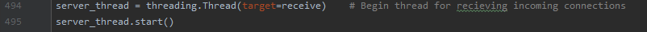

Terminal Poker
After becoming bored with video games, I decided I wanted to play something a bit different with my friends. When I suggested we play poker, all of the online websites seemed too intense and troublesome to sign up for, so I decided to program the game in python myself. I also wanted to do it without a GUI, not because a GUI would be difficult but because I liked the appeal of an old, "hacker style" feel.
Language
Python
Scripts
First, to establish an online connection, we'll need a script for the client and the server. The clients are the computers we connect to while the server script will run from a big computer that we'll "pay" to have access to. Then, we'll need a class and various methods to handle most of the game logic like creating cards, a deck, dealing cards, comparing players hands' and more. (It's best to have these in a serperate file to keep the server and client scipts from becoming too cluttered.) So all together, we have 3 files to look at:
- client.py
- server.py
- cards.py
Imports
The imports we'll be using are:
- socket
- sys
- threading
- cards
- pickle
- time
Note that none of these are already included in python and don't need to be installed.
The Server Script
Let's start with the server. These are some of the resouces I used when learning how to design it:
- Simple TCP Chat Room in Python
- Socket Chatroom server - Creating chat application with sockets in Python
- Sockets Tutorial with Python 3 part 3 - sending and receiving Python Objects with sockets
The first resource used threading and sockets to set up a chat room, while the second only used sockets and select to set up a chat. Both were successful, however the first was not programmed to recieve different amounts and types of data other than text. The second's only refreshed the chat log after a message was sent since it lacked threads to continuously update it. So, taking the best parts of both tutorials, here is my own! I'll let the comments in the code handle most of the explanation and I'll explain things I think are noteworthy under their steps below.
Steps:
- Establish a socket
- Create a thread to recieve clients 
- Create a function to process the incoming messages for each client
- Create a thread to listen for and decide what to do with the client's messages
- Create a function to remove a client (if anything goes wrong while they connect or they lose connection)
- Create a function to send data to a single client
- Create a function to send data to all clients
- Create a thread to listen for typed commands on the server's terminal
- Create the main game logic (Includes handling the game state, evaulating hands, prompting the client, etc.)
As each client is created, they are stored in an array using their sockets as a key. This allows us to easily target specific clients and refrencing data that's associated with them such as their name, cards, chips etc. Only after a client is successfully added to the list, will we start a thread to listen to their messages (each client has their own personal thread on the server to listen to them).
Here, the actual receiving of the message occurs. Each message will have a header and its actual data. The header's job tells the server how much data is coming in. All headers have the same length as defined by the constant HEADER_LENGTH. The function then returns the header of the message as well as its data (though for this program, only the data itself is useful). Since the client only sends text, there is no need to pickle any of the data sent by the client so it can easily be decoded by using .decode('utf-8'). This also means that the client is unable to send objects, though for this case, it never needs to since all game states and logic are handled by the server to avoid cheating.
This thread is what runs the function we established in Step 3. Once we recieve a message, it is either displayed to all other clients as apart of the chat room before the game has started, or is seen as a command input during gameplay. However, we only want to take game commands if we are prompting the client. So, the handle thread communicates with the program using a threading event called "msg_event". Once we are ready to receive a command from the client, we "turn off" the event which tells this thread to "turn on" the event once a message is received.
Like I mentioned earlier, all data sent to the client from the server will have two headers and two pieces of data. The first header is which client sent the message to begin with, the second header and data is the actual information. To go into more detail, "pickle" is used to compress all of our data which is then sent to the client where pickle can unpack the data. With this, we can send any object we like. In addition to this structure, the data itself is always sent as a dictionary with a title. This message title tells the client what kind of message it is receiving so it can choose the appropriate action to deal with it.
All commands need to by typed in the terminal that runs the server script. (It's essentially admin privileges)
I won't go into detail here since anyone can do this their own way. The hard part is over since we can easily send, receive, and prompt the client for data.
The Client Script
There isn't much to note in the client file since most of it is handling and formatting messages sent by the server. We want to limit what the client has access to as much as possible to avoid cheating (players can manipulate the game files from their end).
Steps:
- Establish connection to server
- Create thread to receive server messages
- Create thread to accept and send terminal input
- Format the server messages to display them neatly
As soon as a connection is established, the client will send its name (inputted by user). Be ready to receive this on the server side.

By looking at how the server sends messages, we can prepare to recieve them properly on the client's end. To do this, we first recieve the header and the data that tells the client who the sender of the message is (if it's from the server itself or initially from another client). Unlike the header, the data is compressed by pickle, so pickle.loads unpacks it for us. Then the same can be done with the message from the sender. Using the titles of the messages, the client can handle the messages in different ways depending on what was sent.
To send a message, pickle is not needed since we are only sending text inputted from the terminal. So, we use .encode('utf-8') to pack up our messages for the server.
Conclusion
That's it for now. I didn't go into very much detail so if you have any other questions I would be happy to answer them! Just visit the contact page from the menu on the top left for my information.
Until next time!